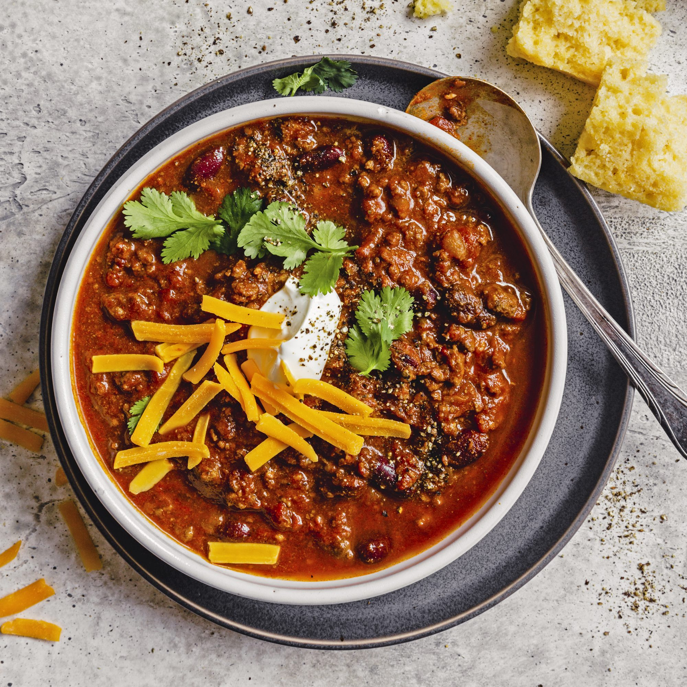

Cook sausage and ground beef in a large pot over medium-high heat until lightly browned and crumbly. When the meat has released its grease, and has begun to brown, drain off accumulated grease, and season with chili powder, cumin, and coriander. Cook and stir for 1 minute until fragrant, then stir in the garlic and onion. Cook until the onion has softened and turned translucent, about 4 minutes.